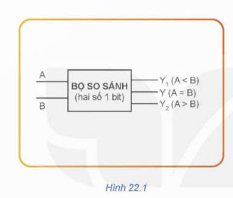

1. Khái niệm mạch logic tổ hợp
💡 Khái niệm
Mạch logic tổ hợp là mạch được tạo thành từ các cổng logic cơ bản. Trạng thái đầu ra tại một thời điểm bất kỳ chỉ phụ thuộc vào tổ hợp các tín hiệu đầu vào ở thời điểm hiện tại và không phụ thuộc vào trạng thái trước đó.
Các loại mạch logic tổ hợp
- Các mạch số học (cộng, trừ nhị phân)
- Bộ hợp kênh (MUX), phân kênh (DEMUX)
- Bộ mã hóa (Encoder), giải mã (Decoder)
- Mạch so sánh
- Bộ khóa và điều khiển logic

2. Mạch so sánh hai số
📘 Chức năng
Mạch so sánh hai số dùng để xác định hai giá trị nhị phân có bằng nhau hay không, hoặc số nào lớn hơn.
Cấu tạo cơ bản
- Hai cổng NOT
- Hai cổng AND
- Một cổng OR
Các cổng logic này phối hợp để tạo ra tín hiệu đầu ra phản ánh mối quan hệ giữa hai đầu vào.